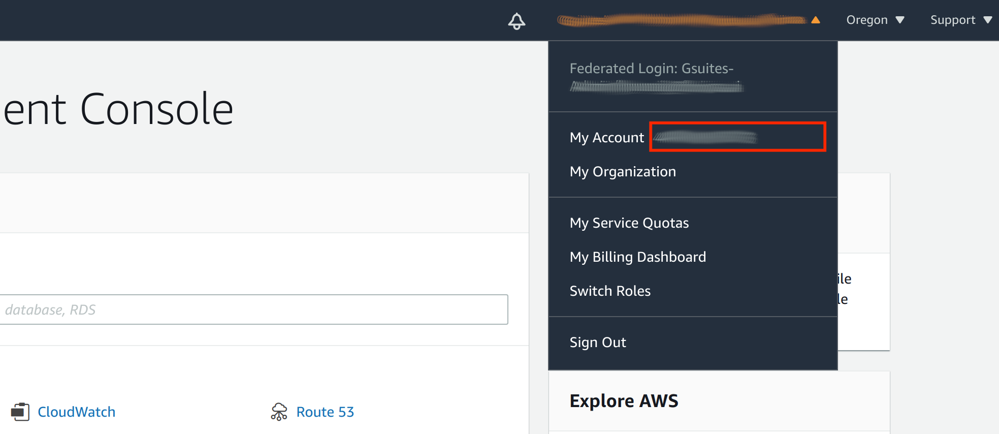

NPU Kernel Driver and Firmware Installation
FuriosaAI currently provides the kernel driver and firmware of Alveo U250 and AWS F1. Select one of the two options below based on your hardware.
Alveo U250 Kernel driver and Firmware Installation
$ git clone https://github.com/furiosa-ai/furiosa-fpga-install.git
$ cd furiosa-fpga-install
$ sudo ./install_furiosa_fpga_u250
Furiosa AI's F1 SDK has been successfully installed.
Please REBOOT this machine to complete the installation.
Please run check_fpga_device command (included in the furiosa-fpga-install repository)
to check if the installation was successful.
$ cd furiosa-fpga-install
$ ./check_fpga_device
[OK] Furiosa AI's FPGA device is detected.
AWS F1 Kernel driver and Firmware Installation
Minimum Requirements
- Permission to access the AWS F1 FPGA image for evaluation provided by FuriosaAI.
You can receive permission by sharing your AWS account ID with FuriosaAI.
- AWS F1 instance
Currently, only the f1.2xlarge type is supported.
f1 instances are exclusive to specific AWS regions. (Ex. US East (N. Virginia))
Getting access to the FuriosaAI AWS F1 FPGA image (enter AWS Account ID)
After logging in to the AWS console, click the Account name in the top right corner, and a pop-up window will appear. Enter the 12-digit AWS Account ID in the red box next to My account to FuriosaAI.
Installation
After creating the f1.2xlarge instance, you can install the kernel driver and firmware within the instance using the command below.
$ git clone https://github.com/furiosa-ai/furiosa-fpga-install.git
$ cd furiosa-fpga-install
$ sudo ./install_furiosa_fpga_aws_f1
...
Furiosa AI's F1 SDK has been successfully installed.
Please REBOOT this machine to complete the installation.
Use the check_fpga_device command (included in the furiosa-fpga-install repository) to check if the installation was successful.
$ cd furiosa-fpga-install
$ ./check_fpga_device
[OK] Furiosa AI's FPGA device is detected.